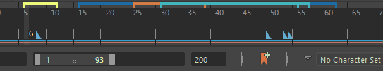

- 在范围滑块(Range Slider)的“时间滑块书签”(Time Slider Bookmark)图标
 上单击鼠标右键。
上单击鼠标右键。
- 在时间滑块(Time Slider)上单击鼠标右键，然后展开“时间滑块书签”(Time Slider Bookmarks)
- 在“动画”(Animation)菜单集 (F4) 中选择
- 创建(Create)
- 打开“创建书签”(Create Bookmark)对话框，以便将书签添加到选定帧。如果未选择任何帧，则会创建单帧书签，或者您可以在“开始”(Start)和“结束”(End)帧字段中输入书签范围。
- 热键：按 Alt (Option) + T 可打开创建时间滑块书签(Create Time Slider Bookmark)窗口。按 Alt (Option) + Shift + T 可打开“快速创建书签”(Quick Create Bookmark)，但不会打开“创建时间滑块书签”(Create Time Slider Bookmark)窗口。
- 编辑(Edit)
- 针对当前时间的书签，打开创建时间滑块书签(Create Time Slider Bookmark)窗口。（如果多个书签重叠，将选择顶部最新创建的书签。）
- 下一个书签
-

- 将当前时间设置为下一个书签的开始时间。
- 热键：'（撇号）
- 上一个书签
- 将当前时间设置为上一个书签的开始时间。
- 热键：;（分号）
- 框显书签(Frame Bookmark)
-

- 将播放范围设置为当前书签的开始和结束。（如果多个书签重叠，将选择顶部最新创建的书签。）
- 热键：|（竖线）
- 框显上一个书签(Frame Previous Bookmark)

- 在当前时间书签之前的书签上设置范围滑块(Range Slider)。
- 热键：:（冒号）
- 框显下一个书签(Frame Next Bookmark)

- 在当前时间书签之后的书签上设置范围滑块(Range Slider)。
- 热键："（引号）
- 取消框显(Unframe)
- 将播放范围设置为动画范围。
- 热键：Alt (Option) + \（反斜线）
- 使用当前选择更新书签(Update Bookmark with selection)
-
注： 仅当通过右键单击“书签”(Bookmark)图标 或“时间滑块”(Time Slider)并选择“时间滑块书签”(Time Slider Bookmarks)卷展栏进行访问时，“使用当前选择更新书签”(Update Bookmark with selection)菜单项才会显示在“时间滑块书签”(Time Slider Bookmarks)菜单中。
-

- 将当前书签替换为选定帧。请参见创建时间滑块书签(Create a Time Slider Bookmar)主题中的更新书签。
- 删除(Delete)

- 删除当前时间最上方的书签。
- 显示书签(Show Bookmarks)
-
注： 此菜单项仅显示在“动画”(Animation)菜单集 (F4) 的“可视化”(Visualize)菜单的“时间滑块书签”(Time Slider Bookmarks)条目中。
- 切换书签可见性。
- 删除所有书签(Delete All Bookmarks)
-
注： 此菜单项仅显示在“动画”(Animation)菜单集 (F4) 的“可视化”(Visualize)菜单的“时间滑块书签”(Time Slider Bookmarks)条目中。
- 从场景中删除所有书签。
- 书签管理器(Bookmark Manager)
- 打开“书签管理器”(Bookmark Manager)窗口。